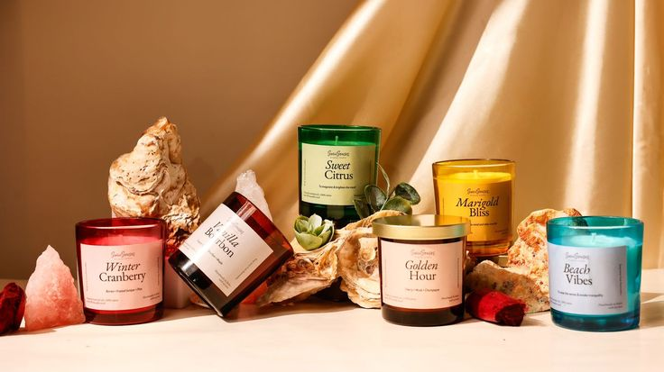

Welcome to our little world

Selamat datang di Lumière & Lullaby! Sebuah ruang kecil tempat keharuman, kehangatan, dan kreativitas berpadu menjadi satu. Kami percaya bahwa setiap momen sederhana pantas memiliki cahaya dan keistimewaannya sendiri.
Lumière & Lullaby menghadirkan scented candle atau lilin aromaterapi dengan berbagai aroma yang terinspirasi dari keindahan kehidupan sehari-hari. Mulai dari lavender yang menenangkan, vanilla yang manis, hingga aroma lembut lainnya. Setiap lilin dirancang untuk menciptakan suasana nyaman, hangat, dan menyenangkan di setiap sudut ruangan.
Website ini merupakan proyek latihan pembuatan website menggunakan HTML dalam mata pelajaran Informatika di SMAN 3 Bandung. Melalui proyek ini, kami mempelajari dasar-dasar pengembangan website, mulai dari struktur HTML, navigasi halaman, penggunaan iframe, hingga penggabungan kreativitas dalam desain web.
Dengan mengangkat konsep toko lilin aromaterapi, kami mencoba menggabungkan teknologi dan kreativitas untuk menciptakan pengalaman berbelanja online yang menarik, interaktif, dan penuh imajinasi.
Karena terkadang, kebahagiaan sederhana dimulai dari aroma yang menyenangkan, cahaya yang hangat, dan waktu kecil untuk menikmati diri sendiri. Nyalakan lilinnya, nikmati momennya!